UI elements
Every element libzrnui has at commit 8f6fb14, rendered by zrn render from the code beside it.
The language tab you pick is remembered. Each snippet is the body of a function that has app and page. All four compiled, and their renders match pixel for pixel.
Pictures, avatars, tabs and pivots, long virtualised lists, dialogs, menus and pickers are not in this commit. Work on some of them is under way, and they will be added here once they are merged. Until then: Status and gaps.
Text
Three sizes of words. Long text wraps by itself. Change it later with set_text.
zui_text, zui_heading, zui_caption
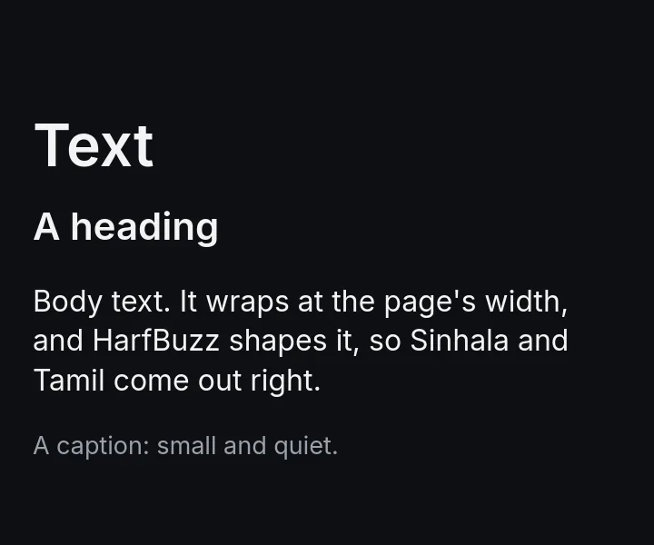
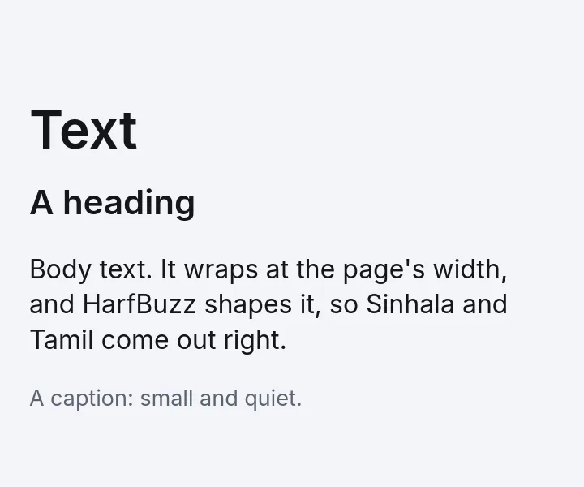
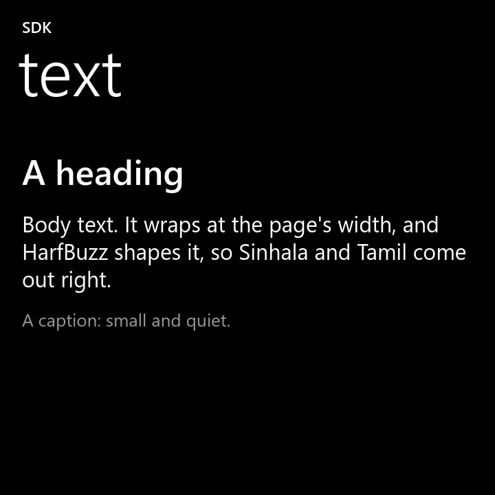
zui_heading(page, "A heading");
zui_text(page, "Body text. It wraps at the page's width, and HarfBuzz shapes it, so Sinhala and Tamil come out right.");
zui_caption(page, "A caption: small and quiet.");page.heading("A heading");
page.text("Body text. It wraps at the page's width, and HarfBuzz shapes it, so Sinhala and Tamil come out right.");
page.caption("A caption: small and quiet.");page.heading("A heading");
page.text("Body text. It wraps at the page's width, and HarfBuzz shapes it, so Sinhala and Tamil come out right.");
page.caption("A caption: small and quiet.");page.heading("A heading")
page.text("Body text. It wraps at the page's width, and HarfBuzz shapes it, so Sinhala and Tamil come out right.")
page.caption("A caption: small and quiet.")Buttons
Four variants: primary (the default), tonal, plain and danger. Use one primary button a page at most. A disabled node draws at 40 % opacity and takes no touch.
zui_button, zui_set_variant, zui_set_enabled
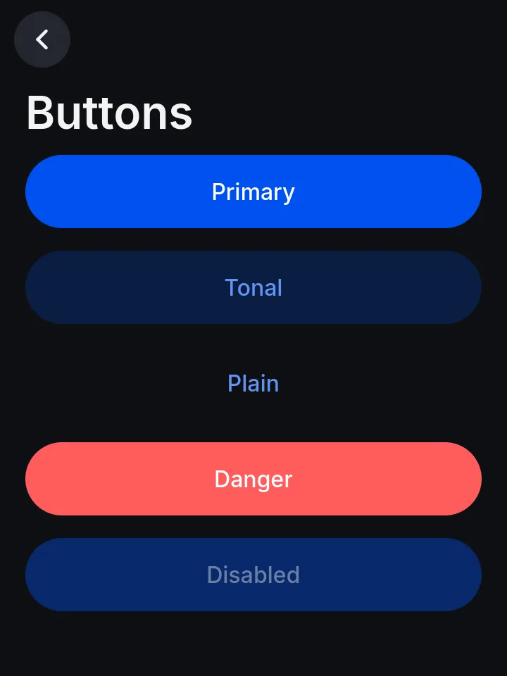
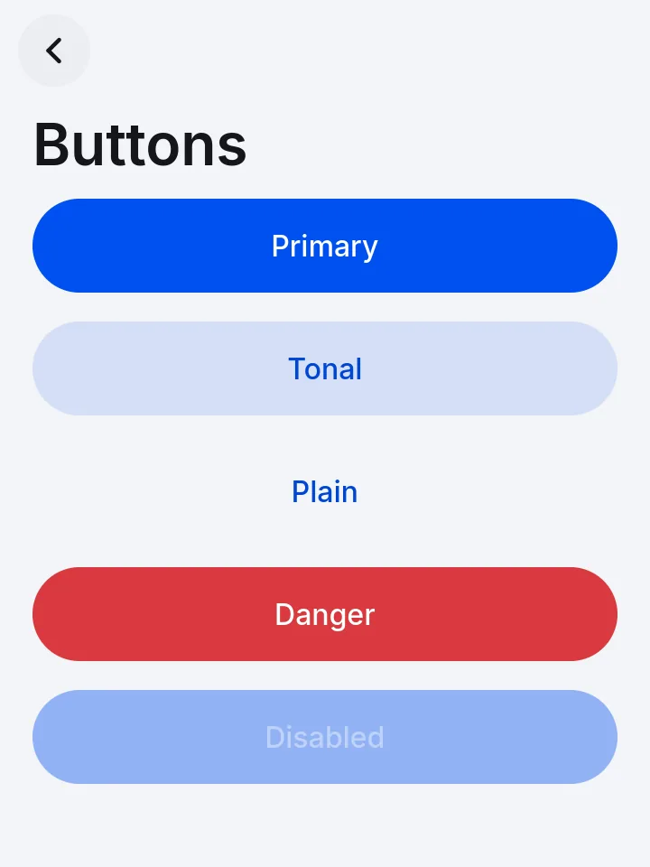
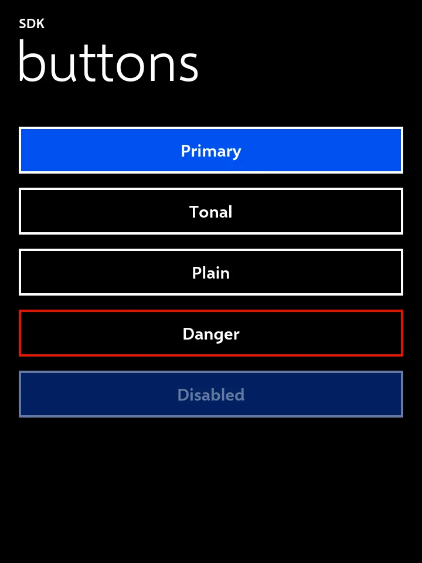
zui_button(page, "Primary", NULL, NULL);
zui_set_variant(zui_button(page, "Tonal", NULL, NULL), ZUI_TONAL);
zui_set_variant(zui_button(page, "Plain", NULL, NULL), ZUI_PLAIN);
zui_set_variant(zui_button(page, "Danger", NULL, NULL), ZUI_DANGER);
zui_set_enabled(zui_button(page, "Disabled", NULL, NULL), false);using zrn::ui::Variant;
page.button("Primary");
page.button("Tonal").set_variant(Variant::Tonal);
page.button("Plain").set_variant(Variant::Plain);
page.button("Danger").set_variant(Variant::Danger);
page.button("Disabled").set_enabled(false);use zrnui::Variant;
page.button("Primary");
page.button("Tonal").set_variant(Variant::Tonal);
page.button("Plain").set_variant(Variant::Plain);
page.button("Danger").set_variant(Variant::Danger);
page.button("Disabled").set_enabled(false);page.button("Primary")
page.button("Tonal", variant=zrnui.TONAL)
page.button("Plain", variant=zrnui.PLAIN)
page.button("Danger", variant=zrnui.DANGER)
page.button("Disabled").enabled = FalseList rows
An item is a title, an optional line under it, an optional value on the right and an optional icon. It gets an arrow only when it has a tap handler. Inside a card, dividers come by themselves.
zui_item, zui_set_detail, zui_set_icon, zui_set_tint


static void row_tapped(zui_node *row, void *data) { zui_toast(zui_node_app(row), "Tapped"); }
zui_node *list = zui_section(page, "Rows");
zui_item(list, "Title only", NULL, NULL, NULL);
zui_item(list, "With a second line", "Under the title", NULL, NULL);
zui_item(list, "Goes somewhere", NULL, row_tapped, NULL);
zui_node *wifi = zui_item(list, "Wi-Fi", NULL, row_tapped, NULL);
zui_set_icon(wifi, "wifi");
zui_set_detail(wifi, "Home-5G");
zui_node *tinted = zui_item(list, "Tinted icon", "zrnCoolStyle only", NULL, NULL);
zui_set_icon(tinted, "music");
zui_set_tint(tinted, 0xd9486e);auto list = page.section("Rows");
list.item("Title only");
list.item("With a second line", "Under the title");
list.item("Goes somewhere", "", [&app] { app.toast("Tapped"); });
list.item("Wi-Fi", "", [&app] { app.toast("Tapped"); }).set_icon("wifi").set_detail("Home-5G");
list.item("Tinted icon", "zrnCoolStyle only").set_icon("music").set_tint(0xd9486e);let list = page.section("Rows");
list.item("Title only", None);
list.item("With a second line", Some("Under the title"));
list.item("Goes somewhere", None).on_click(move || app.toast("Tapped"));
list.item("Wi-Fi", None).on_click(move || app.toast("Tapped")).set_icon("wifi").set_detail("Home-5G");
list.item("Tinted icon", Some("zrnCoolStyle only")).set_icon("music").set_tint(0xd9486e);rows = page.section("Rows")
rows.item("Title only")
rows.item("With a second line", "Under the title")
rows.item("Goes somewhere", on_click=lambda: app.toast("Tapped"))
rows.item("Wi-Fi", on_click=lambda: app.toast("Tapped"), icon="wifi", detail="Home-5G")
rows.item("Tinted icon", "zrnCoolStyle only", icon="music", tint=0xd9486e)Switches
A row with an on/off control. In C the handler reads zui_get_on; the other languages pass the new state. The knob slides over 180 ms. On a switch, set_detail sets its second line. C++ calls it toggle because switch is a keyword.
zui_switch, zui_get_on, zui_set_on, zui_set_detail
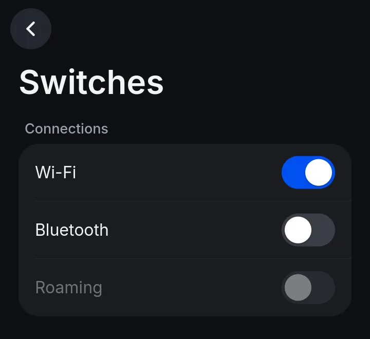
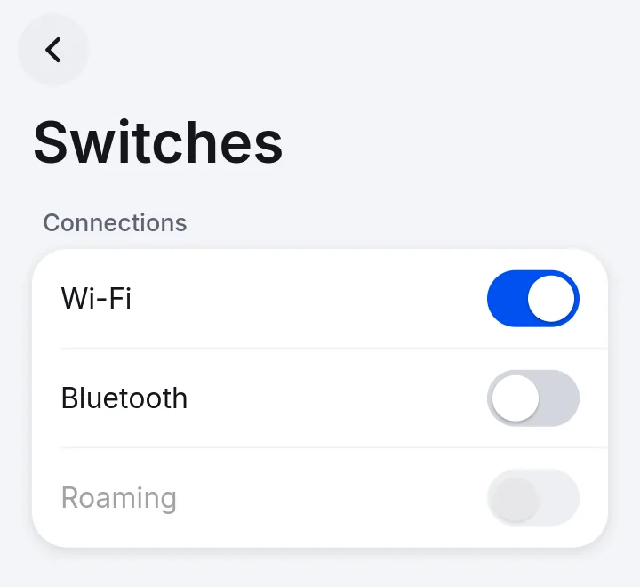
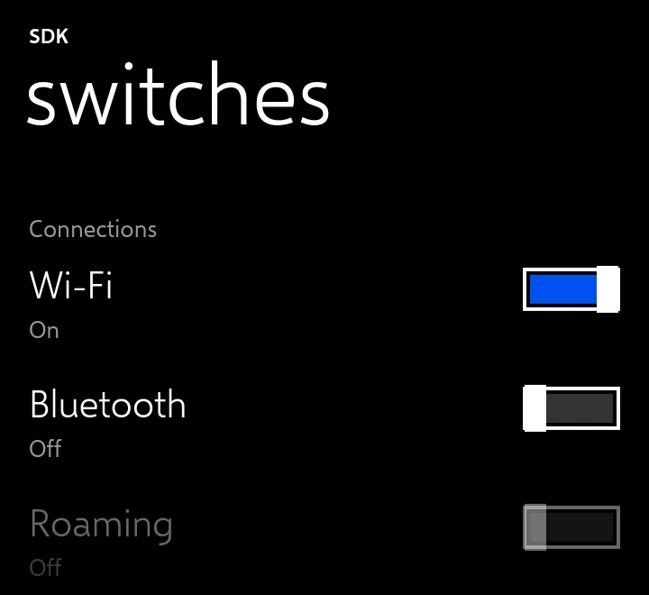
static void wifi_changed(zui_node *sw, void *data) {
zui_set_detail(sw, zui_get_on(sw) ? "Connected" : "Off");
}
zui_node *card = zui_section(page, "Connections");
zui_switch(card, "Wi-Fi", true, wifi_changed, NULL);
zui_switch(card, "Bluetooth", false, NULL, NULL);
zui_set_enabled(zui_switch(card, "Roaming", false, NULL, NULL), false);auto card = page.section("Connections");
auto wifi = card.toggle("Wi-Fi", true);
wifi.on([](zrn::ui::Node sw, int) { sw.set_detail(sw.is_on() ? "Connected" : "Off"); });
card.toggle("Bluetooth", false);
card.toggle("Roaming", false).set_enabled(false);let card = page.section("Connections");
let wifi = card.switch("Wi-Fi", true);
wifi.on_change(move |on| { wifi.set_detail(if on { "Connected" } else { "Off" }); });
card.switch("Bluetooth", false);
card.switch("Roaming", false).set_enabled(false);card = page.section("Connections")
wifi = card.switch("Wi-Fi", True)
wifi.on_event(lambda sw, event: setattr(wifi, "detail", "Connected" if wifi.on else "Off"))
card.switch("Bluetooth", False)
card.switch("Roaming", False).enabled = FalseSliders
A value from 0 to 1. CHANGE fires while the finger moves and SUBMIT when it lifts, so save on submit.
zui_slider, zui_get_value, zui_event
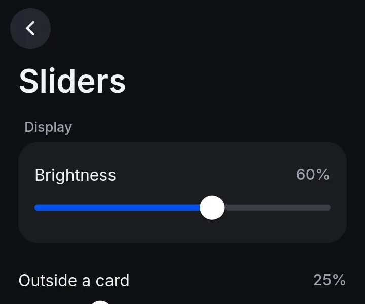
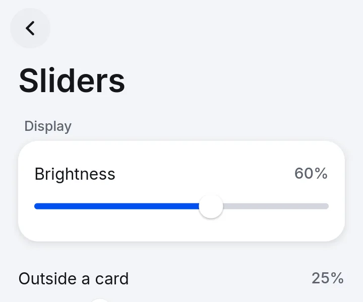
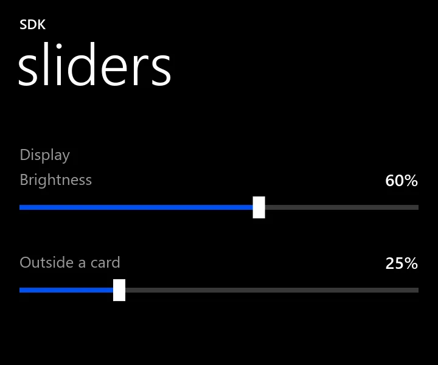
static void level_moved(zui_node *s, void *data) {
if (zui_event(s) == ZUI_EVENT_SUBMIT) printf("saved %.2f\n", zui_get_value(s));
}
zui_node *card = zui_section(page, "Display");
zui_slider(card, "Brightness", 0.6, level_moved, NULL);
zui_slider(page, "Outside a card", 0.25, NULL, NULL);auto card = page.section("Display");
card.slider("Brightness", 0.6, [](double v, bool done) { if (done) printf("saved %.2f\n", v); });
page.slider("Outside a card", 0.25);let card = page.section("Display");
card.slider("Brightness", 0.6).on_slide(|v, done| { if done { println!("saved {v:.2}"); } });
page.slider("Outside a card", 0.25);card = page.section("Display")
card.slider("Brightness", 0.6, on_release=lambda v: print("saved %.2f" % v))
page.slider("Outside a card", 0.25)Progress
Give it 0 to 1, or a value below 0 when you cannot say how long it will take. The indeterminate bar moves by itself, and the picture is one instant of it.
zui_progress, zui_set_value
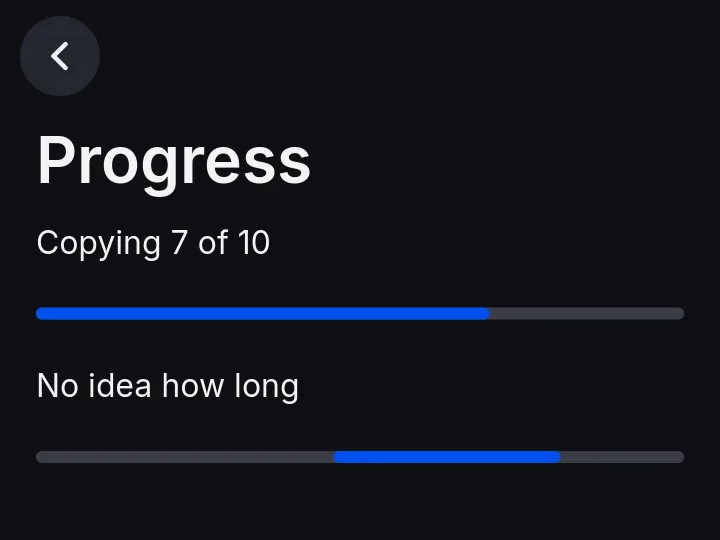
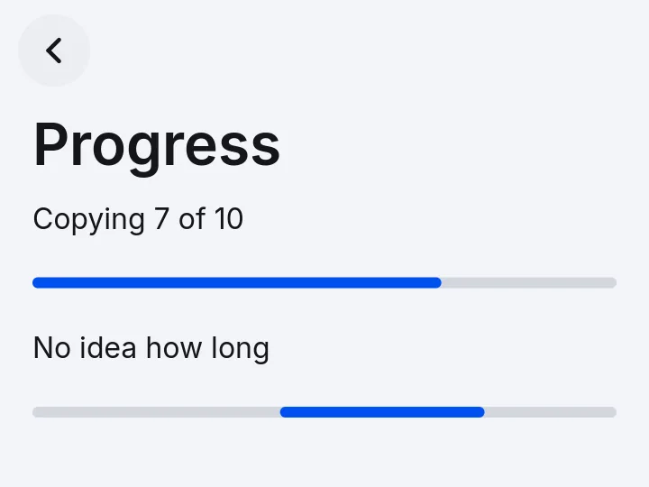
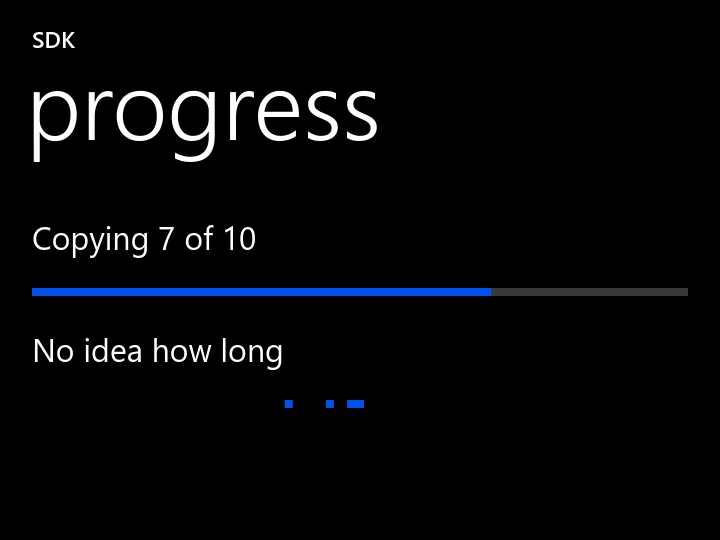
zui_text(page, "Copying 7 of 10");
zui_progress(page, 0.7);
zui_text(page, "No idea how long");
zui_progress(page, -1);page.text("Copying 7 of 10");
page.progress(0.7);
page.text("No idea how long");
page.progress(-1);page.text("Copying 7 of 10");
page.progress(0.7);
page.text("No idea how long");
page.progress(-1.0);page.text("Copying 7 of 10")
page.progress(0.7)
page.text("No idea how long")
page.progress(-1)Text fields
A box to type into. Tapping it asks the shell for the on-screen keyboard. CHANGE fires per edit and SUBMIT on Enter. There is no password mode or multi-line field in this commit.
zui_field, zui_get_text, zui_set_text
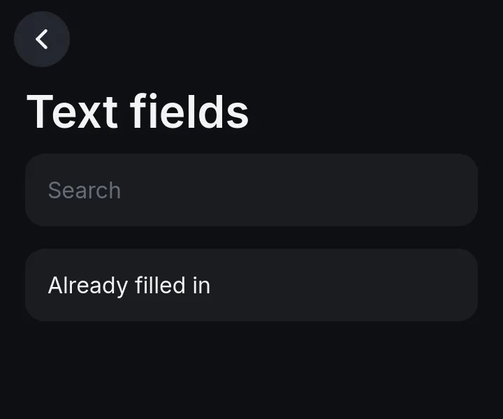
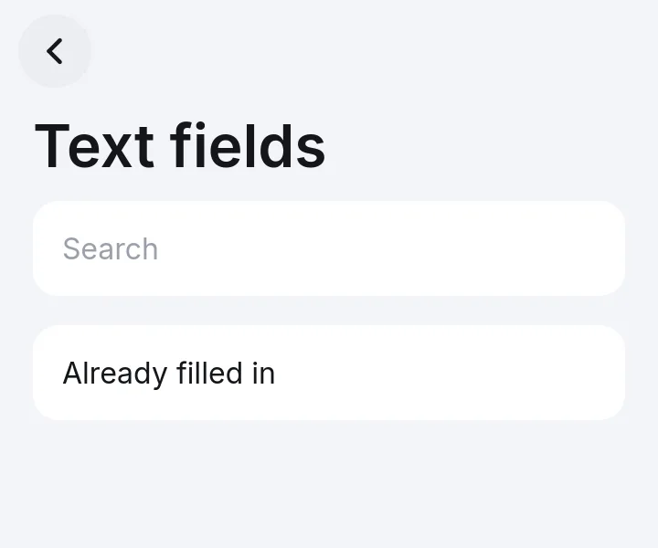
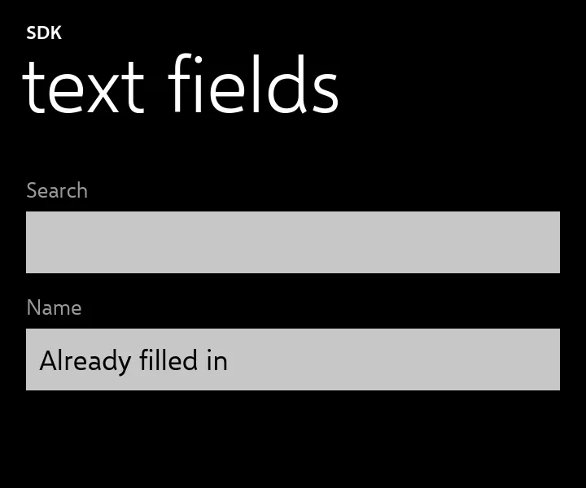
static void search_typed(zui_node *f, void *data) {
if (zui_event(f) == ZUI_EVENT_SUBMIT) printf("search: %s\n", zui_get_text(f));
}
zui_field(page, "Search", search_typed, NULL);
zui_set_text(zui_field(page, "Name", NULL, NULL), "Already filled in");page.field("Search", [](const std::string &t, bool submitted) {
if (submitted) printf("search: %s\n", t.c_str());
});
page.field("Name").set_text("Already filled in");page.field("Search").on_edit(|t, submitted| { if submitted { println!("search: {t}"); } });
page.field("Name").set_text("Already filled in");page.field("Search", on_submit=lambda t: print("search:", t))
page.field("Name").set_text("Already filled in")Sections and cards
section adds a heading and returns the card under it, so add rows to what it returns. A bare card is the same group with no heading. In Metro cards are flat: the rows just sit on black.
zui_section, zui_card


zui_item(zui_section(page, "A section"), "In its card", NULL, NULL, NULL);
zui_node *card = zui_card(page);
zui_text(card, "A card with no heading can hold anything.");
zui_button(card, "Like this", NULL, NULL);page.section("A section").item("In its card");
auto card = page.card();
card.text("A card with no heading can hold anything.");
card.button("Like this");page.section("A section").item("In its card", None);
let card = page.card();
card.text("A card with no heading can hold anything.");
card.button("Like this");page.section("A section").item("In its card")
card = page.card()
card.text("A card with no heading can hold anything.")
card.button("Like this")Rows, columns, space
A page is already a column. A row sets things side by side, and set_flex shares out the spare width. space adds fixed points. Do not fake layout with space: use sections.
zui_row, zui_column, zui_space, zui_set_flex
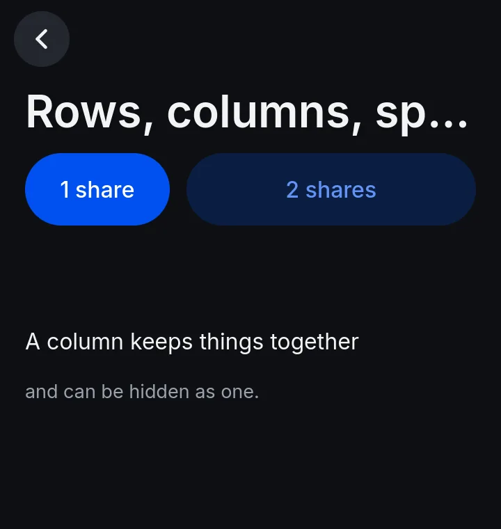
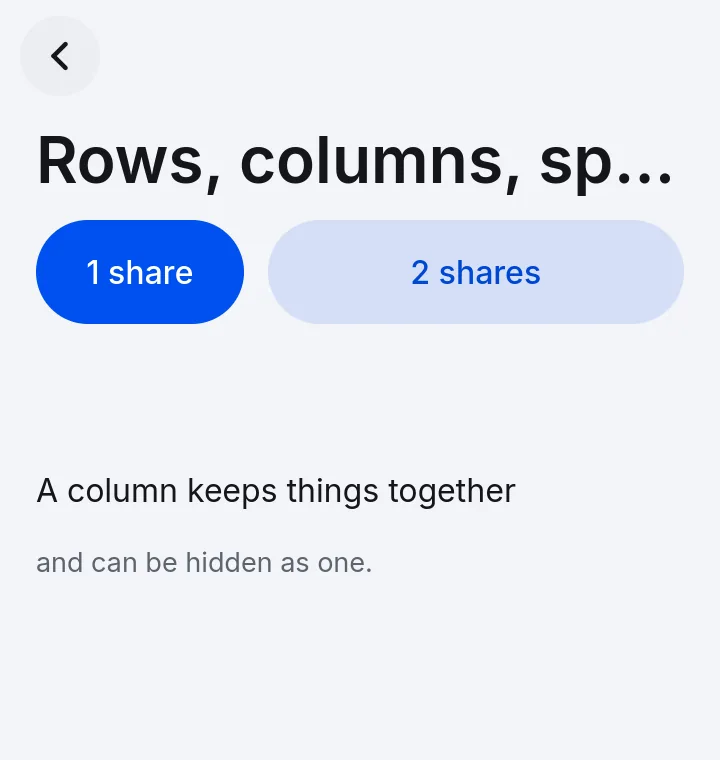
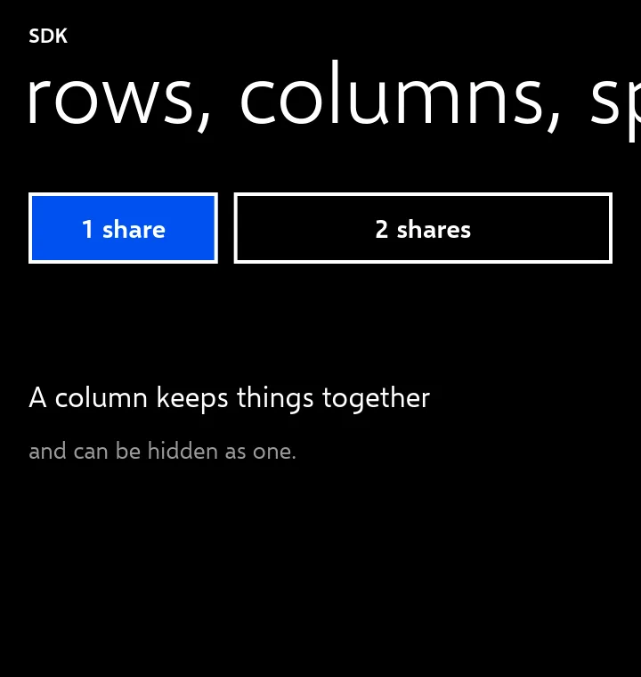
zui_node *row = zui_row(page);
zui_set_flex(zui_button(row, "1 share", NULL, NULL), 1);
zui_node *wide = zui_button(row, "2 shares", NULL, NULL);
zui_set_variant(wide, ZUI_TONAL);
zui_set_flex(wide, 2);
zui_space(page, 40);
zui_node *col = zui_column(page);
zui_text(col, "A column keeps things together");
zui_caption(col, "and can be hidden as one.");auto row = page.row();
row.button("1 share").set_flex(1);
row.button("2 shares").set_variant(zrn::ui::Variant::Tonal).set_flex(2);
page.space(40);
auto col = page.column();
col.text("A column keeps things together");
col.caption("and can be hidden as one.");let row = page.row();
row.button("1 share").set_flex(1.0);
row.button("2 shares").set_variant(zrnui::Variant::Tonal).set_flex(2.0);
page.space(40.0);
let col = page.column();
col.text("A column keeps things together");
col.caption("and can be hidden as one.");row = page.row()
row.button("1 share").flex = 1
row.button("2 shares", variant=zrnui.TONAL).flex = 2
page.space(40)
col = page.column()
col.text("A column keeps things together")
col.caption("and can be hidden as one.")Icons
Twenty line icons, drawn as strokes, named in libzrnui/src/icons.c. An unknown name draws nothing. Metro draws no icons at all: its rows are words only, as the renders show. There is no call in this commit to supply your own picture on a row.
zui_set_icon
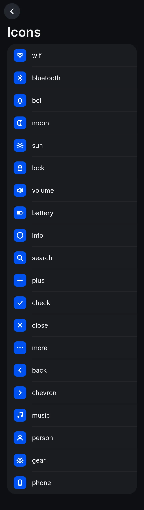
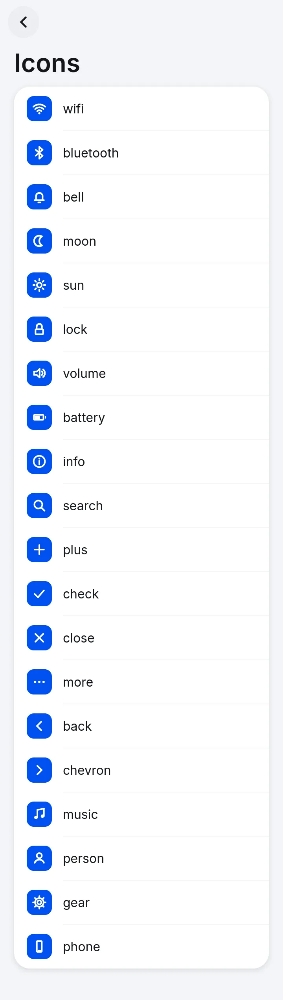
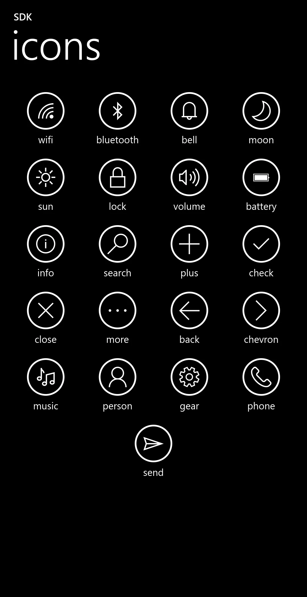
const char *names[] = { "wifi", "bluetooth", "bell", "moon", "sun", "lock", "volume", "battery", "info", "search", "plus", "check", "close", "more", "back", "chevron", "music", "person", "gear", "phone" };
zui_node *card = zui_card(page);
for (size_t i = 0; i < sizeof(names) / sizeof(*names); i++)
zui_set_icon(zui_item(card, names[i], NULL, NULL, NULL), names[i]);auto card = page.card();
for (const char *name : { "wifi", "bluetooth", "bell", "moon", "sun", "lock", "volume", "battery", "info", "search", "plus", "check", "close", "more", "back", "chevron", "music", "person", "gear", "phone" })
card.item(name).set_icon(name);let card = page.card();
for name in ["wifi", "bluetooth", "bell", "moon", "sun", "lock", "volume", "battery", "info", "search", "plus", "check", "close", "more", "back", "chevron", "music", "person", "gear", "phone"] {
card.item(name, None).set_icon(name);
}card = page.card()
for name in ["wifi", "bluetooth", "bell", "moon", "sun", "lock", "volume", "battery", "info", "search", "plus", "check", "close", "more", "back", "chevron", "music", "person", "gear", "phone"]:
card.item(name, icon=name)Busy
zui_busy(app, true), or app.busy(True) in Python, shows that something is loading: a sweep under the top bar in zrnCoolStyle, dots across the top in Metro. These pictures come from a running app in a virtual compositor, one instant of the movement. See it move.
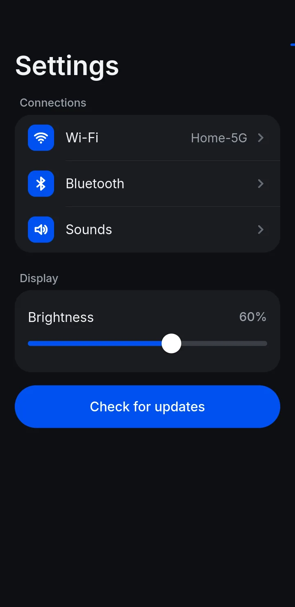
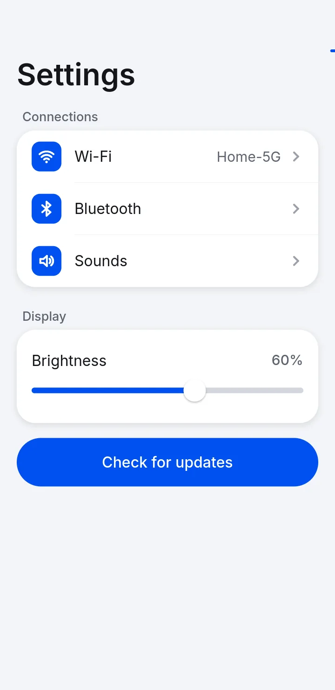
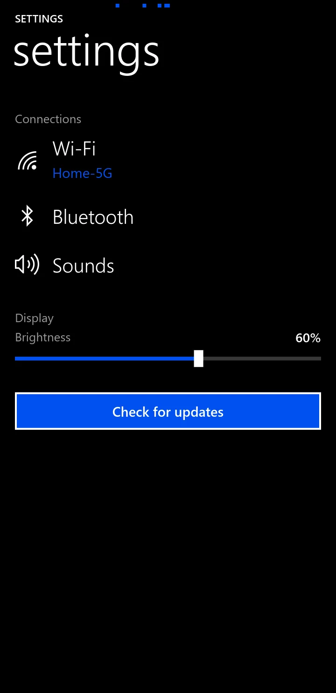
Toast
zui_toast(app, "Saved"), or app.toast("Saved") in the other languages, shows a short message for 2.6 seconds: a pill at the bottom in zrnCoolStyle, an accent bar from the top in Metro.
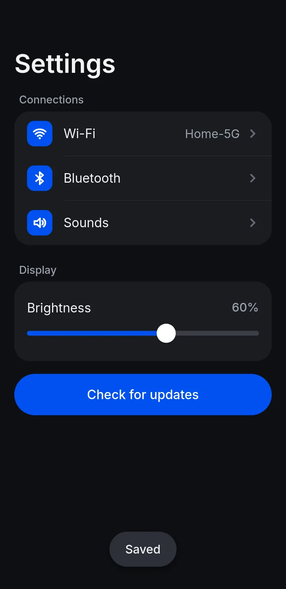
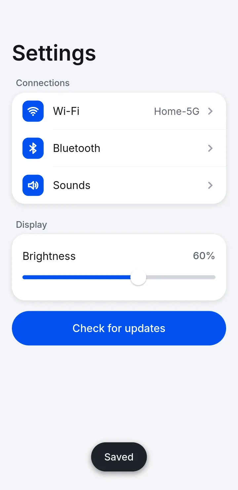
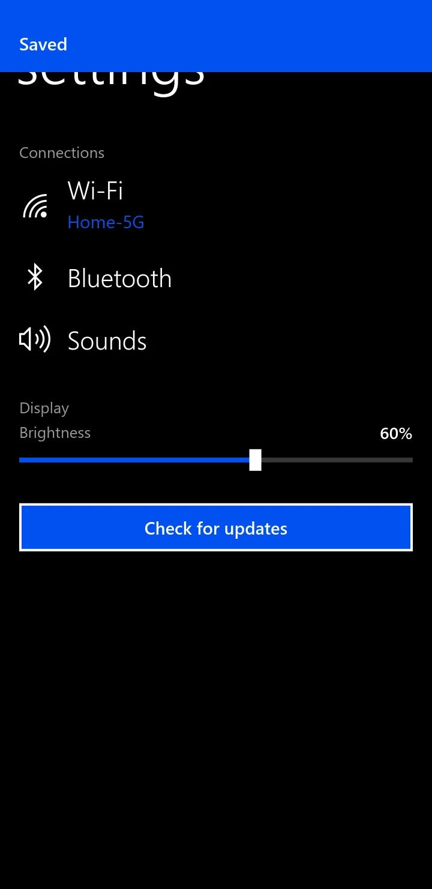
Changing things after they are made
The tree stays. Keep the node and change it: the app redraws only when something changed.
| C | C++, Rust | Python | Does |
|---|---|---|---|
zui_set_text, zui_get_text | set_text, C++ text_value, Rust get_text | set_text(), .text_value | Label, title or field text |
zui_set_detail | set_detail | .detail= | An item's value on the right; a switch's second line |
zui_set_subtitle | set_subtitle | .subtitle= | The line under a title |
zui_set_value, zui_get_value | set_value, value | .value | Slider or progress, 0 to 1 |
zui_set_on, zui_get_on | set_on, is_on | .on | A switch |
zui_set_enabled | set_enabled | .enabled= | 40 % opacity, no touch |
zui_set_visible | set_visible | .visible= | Hidden nodes take no room |
zui_clear, zui_destroy | clear, C++ destroy | clear(), destroy() | Remove what is in it, or it. Do not use old handles after |
Checked against zrn-sdk commit 8f6fb14. Pictures are real renders of code that compiled. Source and proof.